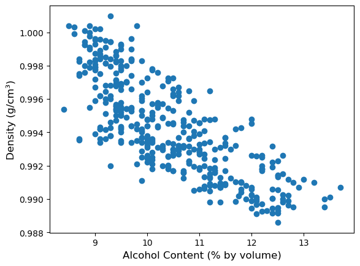
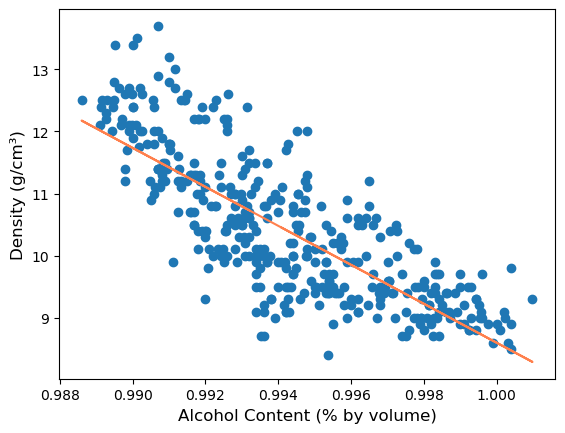
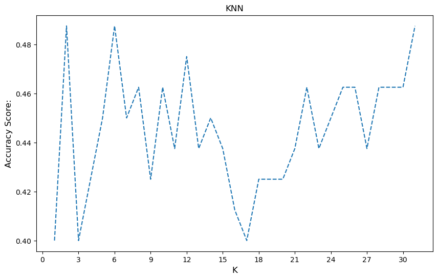
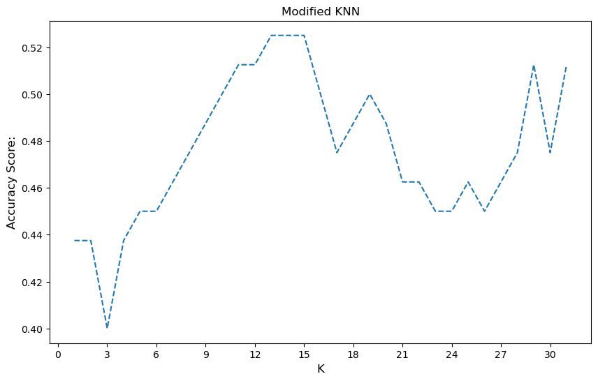
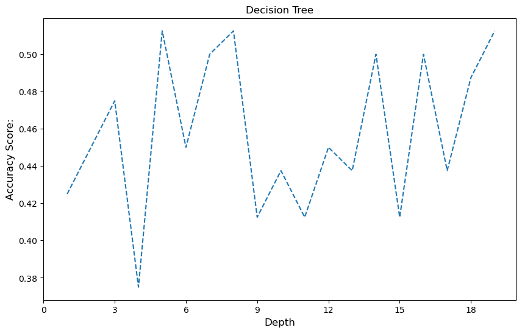
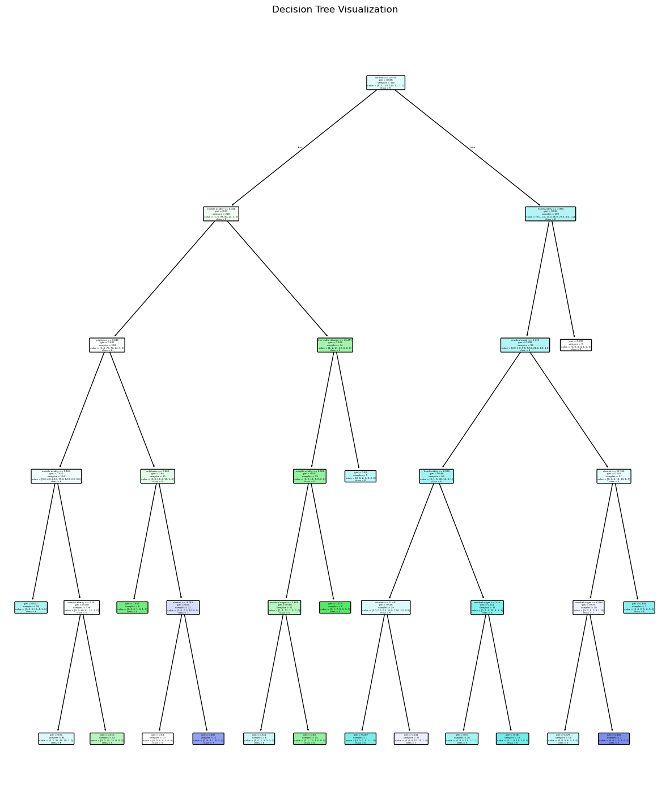
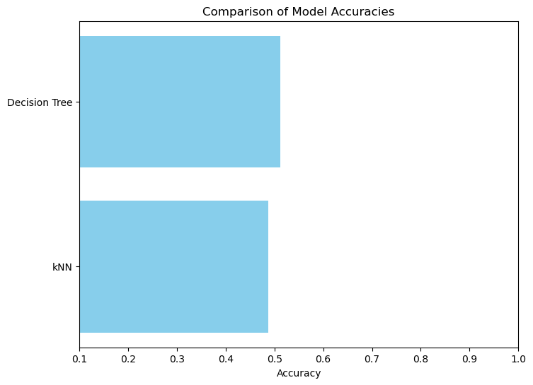
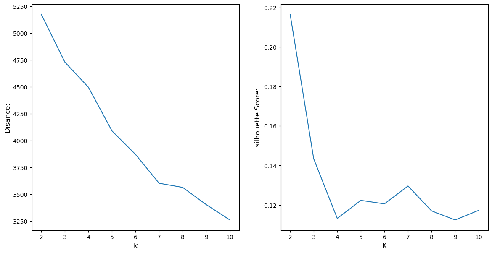
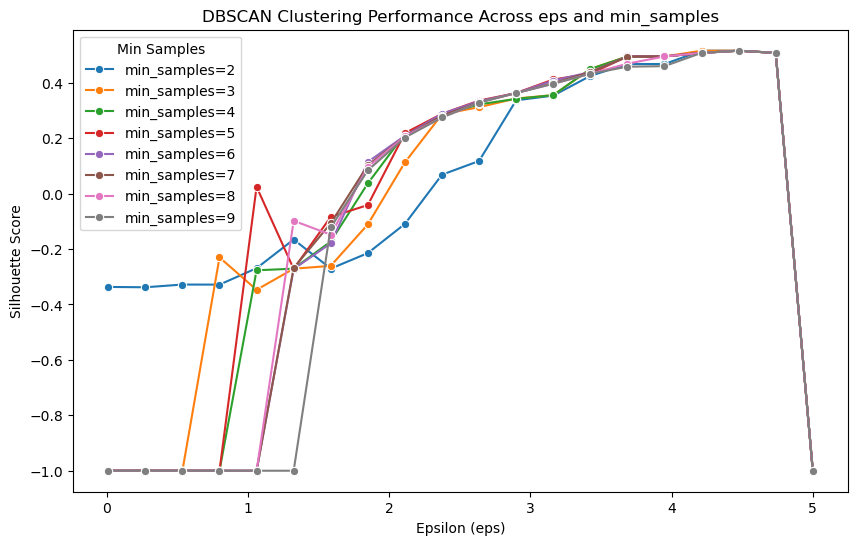
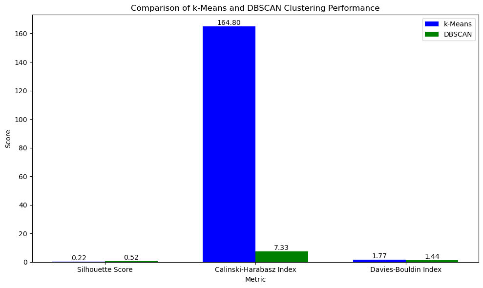

import pandas as pd
import numpy as np
import seaborn as sns
import matplotlib
import matplotlib.pyplot as plt
import matplotlib.ticker as ticker
import itertools
from sklearn.linear_model import LinearRegression
from sklearn.model_selection import train_test_split
from sklearn.preprocessing import StandardScaler
from sklearn.neighbors import KNeighborsClassifier
from sklearn.metrics import accuracy_score, classification_report, confusion_matrix,silhouette_score, davies_bouldin_score,calinski_harabasz_score, mean_squared_error, r2_score
from sklearn.utils import shuffle
from sklearn.tree import DecisionTreeClassifier,plot_tree
from sklearn.cluster import KMeans
from sklearn.cluster import DBSCAN
from sklearn.decomposition import PCA
data = pd.read_csv('A2data.csv', sep = ';')
data.drop_duplicates()
data.replace(r'^\s*$', np.nan, regex=True, inplace=True) #Replacing white space with nan https://stackoverflow.com/a/47810911ML AI
Assignment 2 by: Ajeet Singh (s4098655)
Task 1: Regression
data.dtypesfixed acidity float64
volatile acidity float64
citric acid float64
residual sugar object
chlorides float64
free sulfur dioxide object
total sulfur dioxide object
density object
pH float64
sulphates float64
alcohol float64
quality int64
dtype: objectdata.isnull().sum()fixed acidity 0
volatile acidity 1
citric acid 5
residual sugar 7
chlorides 1
free sulfur dioxide 4
total sulfur dioxide 4
density 8
pH 1
sulphates 2
alcohol 0
quality 0
dtype: int64sample1=data[~data.isnull().any(axis=1)].sample(n=400,random_state=42) #selecting rows without null values
sample1.to_csv('s4098655-A2SampleOne.csv',sep=';',index=False)
sample1 = pd.read_csv('s4098655-A2SampleOne.csv', sep = ';')
sample1= sample1.apply(pd.to_numeric)sample1.head()| fixed acidity | volatile acidity | citric acid | residual sugar | chlorides | free sulfur dioxide | total sulfur dioxide | density | pH | sulphates | alcohol | quality | |
|---|---|---|---|---|---|---|---|---|---|---|---|---|
| 0 | 7.5 | 0.19 | 0.49 | 1.6 | 0.047 | 42.0 | 140.0 | 0.99320 | 3.40 | 0.47 | 10.7 | 6 |
| 1 | 6.6 | 0.16 | 0.34 | 1.1 | 0.037 | 41.0 | 115.0 | 0.98990 | 3.01 | 0.68 | 12.0 | 6 |
| 2 | 6.7 | 0.21 | 0.42 | 9.1 | 0.049 | 31.0 | 150.0 | 0.99530 | 3.12 | 0.74 | 9.9 | 7 |
| 3 | 7.0 | 0.16 | 0.36 | 2.6 | 0.029 | 28.0 | 98.0 | 0.99126 | 3.11 | 0.37 | 11.2 | 7 |
| 4 | 6.4 | 0.24 | 0.27 | 1.5 | 0.040 | 35.0 | 105.0 | 0.98914 | 3.13 | 0.30 | 12.4 | 6 |
sample1.isnull().sum() #checking once againfixed acidity 0
volatile acidity 0
citric acid 0
residual sugar 0
chlorides 0
free sulfur dioxide 0
total sulfur dioxide 0
density 0
pH 0
sulphates 0
alcohol 0
quality 0
dtype: int64#Scatter plot to find the relatinship between alcohol and density.
plt.scatter(sample1['alcohol'],sample1['density'])
plt.xlabel('Alcohol Content (% by volume)', fontsize=12)
plt.ylabel('Density (g/cm³)', fontsize=12)
plt.show()
X = pd.DataFrame(sample1['density']) # Density is the independent variable
y = pd.DataFrame(sample1['alcohol'])
X_train, X_test, y_train, y_test =train_test_split(X,y,test_size=0.3,random_state=42)reg = LinearRegression().fit(X_train,y_train)
# Predict the values for the test set
y_pred = reg.predict(X_test)
# Evaluate the model
mse = mean_squared_error(y_test, y_pred)
r2 = r2_score(y_test, y_pred)
print(f"Mean Squared Error (MSE): {mse}")
print(f"R-squared (R2): {r2}")
slope = reg.coef_
intercept = reg.intercept_
print(f"Slope (coefficient): {slope}")
print(f"Intercept: {intercept}")Mean Squared Error (MSE): 0.5584523695518155
R-squared (R2): 0.6289517388697186
Slope (coefficient): [[-313.9334083]]
Intercept: [322.53048828]#PLot with linear model
plt.scatter(X, y)
plt.plot(X, reg.predict(X), color =(1,0.5,0.3) )
plt.ylabel('Density (g/cm³)', fontsize=12)
plt.xlabel('Alcohol Content (% by volume)', fontsize=12)
plt.show()
Task 2: Classification
# For each Task, you may choose to or not to use subsections.
# Feel free to add new subsections under any Task or delete/amend any subsections (e.g. kNN) in this template.
sample2=data[~data.isnull().any(axis=1)].sample(1000,random_state=40)
sample2.to_csv('s4098655-A2SampleTwo.csv',sep=';',index=False)
sample2 = pd.read_csv('s4098655-A2SampleOne.csv', sep = ';')
sample2 = sample2.apply(pd.to_numeric)sample2.isnull().sum()fixed acidity 0
volatile acidity 0
citric acid 0
residual sugar 0
chlorides 0
free sulfur dioxide 0
total sulfur dioxide 0
density 0
pH 0
sulphates 0
alcohol 0
quality 0
dtype: int64X = pd.DataFrame(sample2.drop(columns=['quality'])) # Features (all columns except quality)
y = pd.DataFrame(sample2['quality'])
X_train, X_test, y_train, y_test = train_test_split(X, y, test_size=0.2, random_state=40)kNN
error=[]
max_accu=0
k_max=0
for k in range(1,32): #looping till sqrt(1000)
knn = KNeighborsClassifier(n_neighbors=k)
knn.fit(X_train, y_train.values.flatten())
y_pred_knn = knn.predict(X_test)
accuracy_knn = accuracy_score(y_test, y_pred_knn)
error.append(accuracy_knn)
if(max_accu<accuracy_knn):
k_max=k
max_accu=max(accuracy_knn,max_accu)
print("Max accuracy is:",max_accu,"For k=",k_max)
#plotting the score vs k
plt.figure(figsize=(10,6))
plt.plot(range(1,32),error,linestyle='dashed')
ticks=np.arange(0, 32, 3)
plt.xticks(ticks)
plt.ylabel('Accuracy Score:', fontsize=12)
plt.xlabel('K', fontsize=12)
plt.title('KNN')
plt.show()Max accuracy is: 0.4875 For k= 2
knn = KNeighborsClassifier(n_neighbors=k_max) #chossing the best k
knn.fit(X_train, y_train.values.flatten())
y_pred_knn = knn.predict(X_test)
accuracy_knn = accuracy_score(y_test, y_pred_knn)
print(f"Accuracy of kNN classifier: {accuracy_knn:.4f}")
print("\nClassification Report for kNN:")
print(classification_report(y_test, y_pred_knn,zero_division=0))
# Confusion Matrix
conf_matrix_knn = confusion_matrix(y_test, y_pred_knn)
print("Confusion Matrix for kNN:")
print(conf_matrix_knn)Accuracy of kNN classifier: 0.4875
Classification Report for kNN:
precision recall f1-score support
3 0.00 0.00 0.00 1
4 0.00 0.00 0.00 3
5 0.59 0.75 0.66 32
6 0.40 0.50 0.44 28
7 1.00 0.08 0.15 12
8 0.00 0.00 0.00 4
accuracy 0.49 80
macro avg 0.33 0.22 0.21 80
weighted avg 0.52 0.49 0.44 80
Confusion Matrix for kNN:
[[ 0 0 1 0 0 0]
[ 0 0 2 1 0 0]
[ 0 1 24 7 0 0]
[ 0 2 12 14 0 0]
[ 0 0 2 9 1 0]
[ 0 0 0 4 0 0]]modified kNN
scaler = StandardScaler()
X_train = scaler.fit_transform(X_train)
X_test = scaler.transform(X_test)error=[]
max_accu=0
k_max=0
for k in range(1,32):
knn_modified = KNeighborsClassifier(n_neighbors=k,weights='distance',p=1)
knn_modified.fit(X_train, y_train.values.flatten())
y_pred_knn = knn_modified.predict(X_test)
accuracy_knn_modified = accuracy_score(y_test, y_pred_knn)
if(max_accu<accuracy_knn_modified):
k_max=k
max_accu=max(accuracy_knn_modified,max_accu)
error.append(accuracy_knn_modified)
print("Max accuracy is:",max_accu,"For k=",k_max)
plt.figure(figsize=(10,6))
plt.plot(range(1,32),error,linestyle='dashed')
ticks=np.arange(0, 32, 3)
plt.xticks(ticks)
plt.ylabel('Accuracy Score:', fontsize=12)
plt.xlabel('K', fontsize=12)
plt.title('Modified KNN')
plt.show()
Max accuracy is: 0.525 For k= 13
knn_modified = KNeighborsClassifier(n_neighbors=k_max,weights='distance',p=1)
knn_modified.fit(X_train, y_train.values.flatten())
y_pred_knn_modified = knn_modified.predict(X_test)
accuracy_knn_modified = accuracy_score(y_test, y_pred_knn_modified)
print(f"Accuracy of kNN classifier: {accuracy_knn_modified:.4f}")
print("\nClassification Report for modified kNN:")
print(classification_report(y_test, y_pred_knn_modified,zero_division=0))
# Confusion Matrix
conf_matrix_knn = confusion_matrix(y_test, y_pred_knn_modified)
print("Confusion Matrix for modified kNN:")
print(conf_matrix_knn)Accuracy of kNN classifier: 0.5250
Classification Report for modified kNN:
precision recall f1-score support
3 0.00 0.00 0.00 1
4 0.00 0.00 0.00 3
5 0.71 0.53 0.61 32
6 0.44 0.75 0.55 28
7 0.50 0.33 0.40 12
8 0.00 0.00 0.00 4
accuracy 0.53 80
macro avg 0.27 0.27 0.26 80
weighted avg 0.51 0.53 0.50 80
Confusion Matrix for modified kNN:
[[ 0 0 1 0 0 0]
[ 0 0 2 1 0 0]
[ 0 0 17 14 1 0]
[ 0 0 4 21 3 0]
[ 0 0 0 8 4 0]
[ 0 0 0 4 0 0]]Decision Tree & comparison
X = pd.DataFrame(sample2.drop(columns=['quality']))
y = pd.DataFrame(sample2['quality'])
X_train, X_test, y_train, y_test = train_test_split(X, y, test_size=0.2, random_state=42)error=[]
max_accu=0
k_max=0
for k in range(1,20):
dtc = DecisionTreeClassifier(max_depth=k,min_samples_leaf= 5, min_samples_split=20,max_leaf_nodes= 50,splitter='random')
dtc.fit(X_train, y_train)
y_pred_dtc = dtc.predict(X_test)
accuracy_dtc = accuracy_score(y_test, y_pred_dtc)
if(max_accu<accuracy_dtc):
k_max=k
max_accu=max(accuracy_dtc,max_accu)
error.append(accuracy_dtc)
print("Max accuracy is:",max_accu,"For depth=",k_max)
plt.figure(figsize=(10,6))
plt.plot(range(1,20),error,linestyle='dashed')
ticks=np.arange(0, 20, 3)
plt.xticks(ticks)
plt.ylabel('Accuracy Score:', fontsize=12)
plt.xlabel('Depth', fontsize=12)
plt.title('Decision Tree')
plt.show()
Max accuracy is: 0.5125 For depth= 5
accuracy_dtc=max_accu
dtc = DecisionTreeClassifier(max_depth=k_max,min_samples_leaf= 5, min_samples_split=20,max_leaf_nodes= 50,splitter='random')
dtc.fit(X_train, y_train)
y_pred_dtc = dtc.predict(X_test)
conf_matrix_dtc = confusion_matrix(y_test, y_pred_dtc)
print(classification_report(y_test, y_pred_dtc,zero_division=0))
print("Confusion Matrix for modified kNN:")
print(conf_matrix_knn) precision recall f1-score support
3 0.00 0.00 0.00 1
4 0.00 0.00 0.00 3
5 0.45 0.36 0.40 25
6 0.44 0.59 0.51 34
7 0.27 0.29 0.28 14
8 0.00 0.00 0.00 3
accuracy 0.41 80
macro avg 0.19 0.21 0.20 80
weighted avg 0.38 0.41 0.39 80
Confusion Matrix for modified kNN:
[[ 0 0 1 0 0 0]
[ 0 0 2 1 0 0]
[ 0 0 17 14 1 0]
[ 0 0 4 21 3 0]
[ 0 0 0 8 4 0]
[ 0 0 0 4 0 0]]# Ploting the decision tree
plt.figure(figsize=(15, 18))
class_names = [str(cls) for cls in dtc.classes_]
plot_tree(dtc, feature_names=X.columns, class_names=class_names, filled=True, rounded=True)
plt.title('Decision Tree Visualization')
plt.savefig('tree.pdf')
#comparing using box plot
models = ['kNN','Decision Tree']
accuracies = [accuracy_knn, accuracy_dtc]
plt.figure(figsize=(8, 6))
plt.barh(models, accuracies, color='skyblue')
plt.xlabel('Accuracy')
plt.title('Comparison of Model Accuracies')
plt.xlim([0.1, 1.0])
plt.show()
Task 3: Clustering
sample3=data[~data.isnull().any(axis=1)].sample(600,random_state=42)
sample3.to_csv('s4098655-A2SampleThree.csv',sep=';',index=False)
sample3 = pd.read_csv('s4098655-A2SampleThree.csv', sep = ';')
sample3 = sample3.apply(pd.to_numeric)sample3.head()| fixed acidity | volatile acidity | citric acid | residual sugar | chlorides | free sulfur dioxide | total sulfur dioxide | density | pH | sulphates | alcohol | quality | |
|---|---|---|---|---|---|---|---|---|---|---|---|---|
| 0 | 7.5 | 0.19 | 0.49 | 1.6 | 0.047 | 42.0 | 140.0 | 0.99320 | 3.40 | 0.47 | 10.7 | 6 |
| 1 | 6.6 | 0.16 | 0.34 | 1.1 | 0.037 | 41.0 | 115.0 | 0.98990 | 3.01 | 0.68 | 12.0 | 6 |
| 2 | 6.7 | 0.21 | 0.42 | 9.1 | 0.049 | 31.0 | 150.0 | 0.99530 | 3.12 | 0.74 | 9.9 | 7 |
| 3 | 7.0 | 0.16 | 0.36 | 2.6 | 0.029 | 28.0 | 98.0 | 0.99126 | 3.11 | 0.37 | 11.2 | 7 |
| 4 | 6.4 | 0.24 | 0.27 | 1.5 | 0.040 | 35.0 | 105.0 | 0.98914 | 3.13 | 0.30 | 12.4 | 6 |
X = sample3.drop(columns=['quality'])
scaler = StandardScaler()
X_scaled = scaler.fit_transform(X)k-Means
dist=[]
silhouette_scores = []
for k in range(2, 11):
kmeans = KMeans(n_clusters = k, random_state = 42)
kmeans.fit(X_scaled)
cluster_labels = kmeans.labels_
silhouette_avg = silhouette_score(X_scaled, cluster_labels)
dist.append(kmeans.inertia_)
silhouette_scores.append(silhouette_avg)
#plotting wss vs k and silhouette score vs k
fig = plt.figure(figsize=(14,7))
fig.add_subplot(121)
plt.plot(range(2,11), dist)
ticks=np.arange(2, 11, 1)
plt.ylabel('Disance:', fontsize=12)
plt.xlabel('k', fontsize=12)
plt.xticks(ticks)
fig.add_subplot(122)
plt.plot(range(2,11),silhouette_scores)
plt.ylabel('silhouette Score:', fontsize=12)
plt.xlabel('K', fontsize=12)
plt.show()
kmeans = KMeans(n_clusters=2, random_state=42)
kmeans.fit(X_scaled)
cluster_labels = kmeans.labels_
# Calculate metrics
kmeans_silhouette = silhouette_score(X_scaled, cluster_labels)
kmeans_ch = calinski_harabasz_score(X_scaled, cluster_labels)
kmeans_db = davies_bouldin_score(X_scaled, cluster_labels)
print("silhouette_score:",kmeans_silhouette)
print("calinski_harabasz_score:",kmeans_ch)
print("davies_bouldin_score:",kmeans_db)silhouette_score: 0.21645081487959894
calinski_harabasz_score: 164.80127507573837
davies_bouldin_score: 1.7747196112762174DBSCAN & comparison
eps_values = np.linspace(0.01, 5, num=20)
min_samples_values = np.arange(2, 10, step=1)
dbscan_scores = {min_samples: [] for min_samples in min_samples_values}
# To find the best value
max_score = -1
best_eps = None
best_min_samples = None
combination = list(itertools.product(eps_values, min_samples_values))
# Loop through each combination of eps and min_samples
for eps, min_samples in combination:
dbscan = DBSCAN(eps=eps, min_samples=min_samples)
dbscan.fit(X_scaled)
cluster_labels = dbscan.labels_
# Calculate Silhouette Score for DBSCAN if more than 1 cluster is formed
if len(set(cluster_labels)) > 1: # Check if there is more than 1 cluster
silhouette_avg = silhouette_score(X_scaled, cluster_labels)
dbscan_scores[min_samples].append(silhouette_avg)
if silhouette_avg > max_score:
max_score = silhouette_avg
best_eps = eps
best_min_samples = min_samples
else:
dbscan_scores[min_samples].append(-1) # Append -1 for cases with only 1 cluster
# Plotting the results using a line plot
plt.figure(figsize=(10, 6))
for min_samples, scores in dbscan_scores.items():
sns.lineplot(x=eps_values, y=scores, marker='o', label=f'min_samples={min_samples}')
print(f"Maximum Silhouette Score: {max_score}")
print(f"Best epsilon (eps): {best_eps}")
print(f"Best min_samples: {best_min_samples}")
plt.xlabel('Epsilon (eps)')
plt.ylabel('Silhouette Score')
plt.title('DBSCAN Clustering Performance Across eps and min_samples')
plt.legend(title='Min Samples')
plt.show()
Maximum Silhouette Score: 0.5156629555602997
Best epsilon (eps): 4.212105263157895
Best min_samples: 2
#using the best paramaters
dbscan = DBSCAN(eps=best_eps, min_samples=best_min_samples)
dbscan.fit(X_scaled)
cluster_labels = dbscan.labels_
dbscan_silhouette = silhouette_score(X_scaled, cluster_labels)
dbscan_ch = calinski_harabasz_score(X_scaled, cluster_labels)
dbscan_db = davies_bouldin_score(X_scaled, cluster_labels)
print("silhouette_score:",dbscan_silhouette)
print("calinski_harabasz_score:",dbscan_ch)
print("davies_bouldin_score:",dbscan_db)silhouette_score: 0.5156629555602997
calinski_harabasz_score: 7.332429925012768
davies_bouldin_score: 1.4388362874914498#comparison of kmeans and dbscans
metrics = ['Silhouette Score', 'Calinski-Harabasz Index', 'Davies-Bouldin Index']
kmeans_scores = [kmeans_silhouette, kmeans_ch, kmeans_db]
dbscan_scores = [dbscan_silhouette, dbscan_ch, dbscan_db]
x = np.arange(len(metrics)) # label locations
width = 0.35 # width of the bars
fig, ax = plt.subplots(figsize=(10, 6))
bars1 = ax.bar(x - width/2, kmeans_scores, width, label='k-Means', color='b')
bars2 = ax.bar(x + width/2, dbscan_scores, width, label='DBSCAN', color='g')
ax.set_xlabel('Metric')
ax.set_ylabel('Score')
ax.set_title('Comparison of k-Means and DBSCAN Clustering Performance')
ax.set_xticks(x)
ax.set_xticklabels(metrics)
ax.legend()
def add_labels(bars):
for bar in bars:
yval = bar.get_height()
ax.text(bar.get_x() + bar.get_width()/2, yval, f'{yval:.2f}', ha='center', va='bottom')
add_labels(bars1)
add_labels(bars2)
plt.tight_layout()
plt.show()